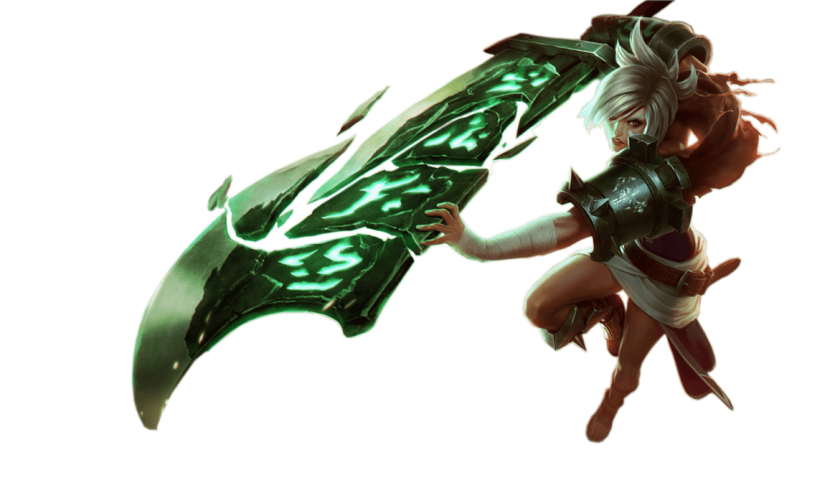
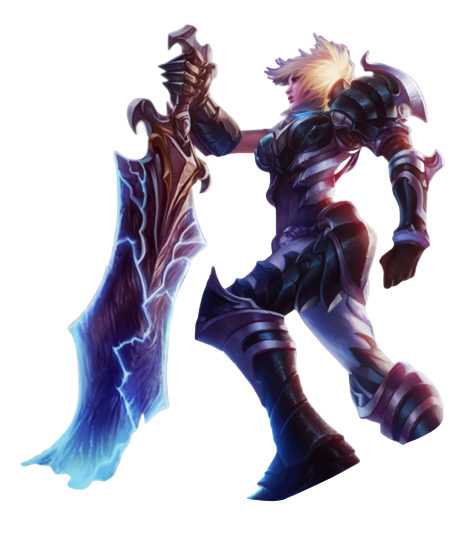
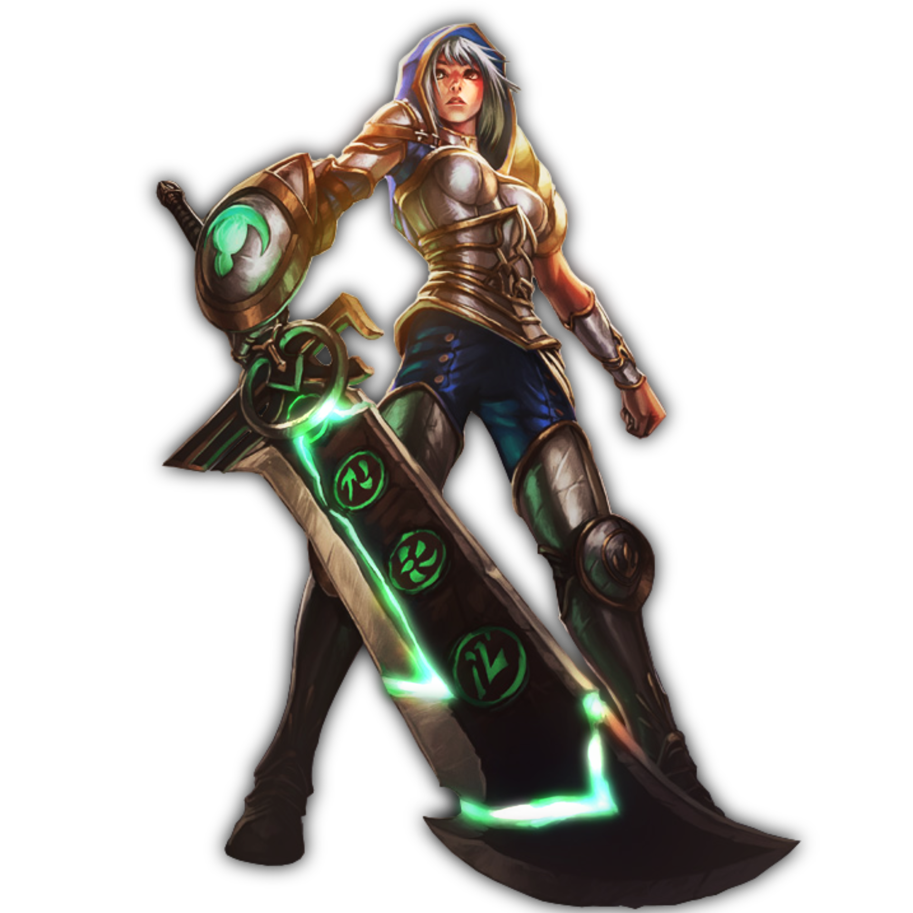
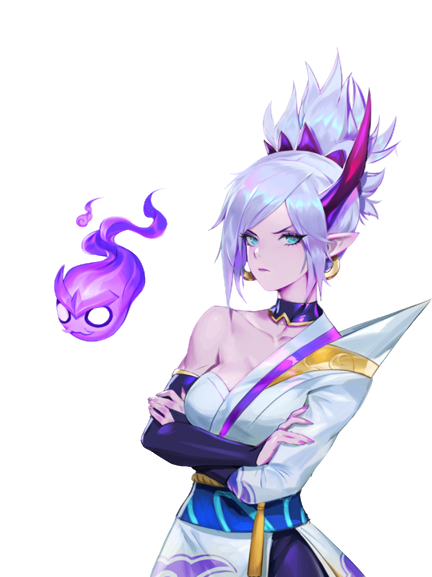

VALORES DA RIVEN

FORÇA
A Riven é uma
personagem que demonstra muita força, enquanto está em jogo, dando muito dano em seus inimigos.

DETERMINAÇÃO
A Riven é
uma personagem de muita determinação, sendo notado isso em suas falas durante o jogo e sua
história.

CONFIANÇA
A Riven é uma
personagem que demonstra muita confiança, uma vez que na história ela comandava um batalhão.
HABILIDADES DA RIVEN NO JOGO
"ASAS QUEBRADAS"
Riven faz uma série rápida de acertos. Esta habilidade pode ser reativada três vezes.
"EXPLOSÃO DE KI"
Riven emite uma Explosão de Ki, causando dano e atordoamento a inimigos próximos.
"VALENTIA"
Riven avança uma curta distância e bloqueia o dano recebido.
"LÂMINA DO EXÍLIO"
Riven fortalece sua arma de recordação com energia, recebendo Dano de Ataque e alcance. Durante este período, ela também pode usar Golpe de Vento, um poderoso ataque à distância, uma vez.